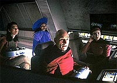
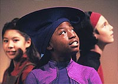
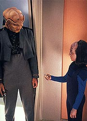
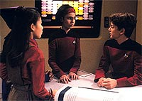
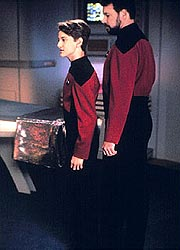

|
MANCHETE
DO EPISDIO
Picard e
amiguinhos voltam a ser
crianas, em legtimo estupro cientfico
Episdio
anterior | Prximo
episdio
Sinopse:
Data Estelar: 46235.7.
De volta de uma licena de frias, Picard, a alferes Ro, Keiko O'Brien
e Guinan se vem s voltas com o perigo a bordo de sua nave
auxiliar. Miles O'Brien consegue teleport-los de volta
Enterprise, mas uma falha no sistema do transporte os converte em
crianas com idade aparente de 12 anos.
 Beverly examina o
grupo e descobre que, embora seus corpos tenham mudado, suas mentes
permanecem intactas. Entretanto, quando o jovem Picard tenta retomar
seu comando e liderar sua tripulao como se nada tivesse
acontecido, sua equipe comea a ter dificuldades para lev-lo a srio.
Por causa disso, Beverly o convence gentilmente de temporariamente
ceder o comando a Riker.
Mais tarde, Geordi descobre que os tripulantes transformados foram
afetados por um campo de reverso molecular, que fez com que o
transporte cortasse de suas clulas o pedao do cdigo gentico
responsvel por suas atividades metablicas da idade adulta. O
engenheiro acredita que o transporte pode ser usado para reverter o
processo e restaurar o grupo de volta ao normal. Mas antes que eles
possam iniciar o processo, a nave atacada sem aviso por duas
naves Klingons.
A tripulao tenta retaliar, mas as naves inimigas conseguem
derrubar os sistemas de energia da Enterprise. Subitamente, Worf
capta assinaturas de transporte em trs reas de carga. Conforme a
tripulao se prepara para defender a nave contra os invasores,
dois Ferengis se materializam na ponte. Seu lder, Turin, chega e
informa Riker e os demais de que ele declara a Enterprise perdida e
est iniciando operaes de resgate, de acordo com a lei Ferengi.
Se a tripulao se recusar a cooperar, eles sero executados.
 A jovem
Guinan aponta ao jovem Picard e seus colegas que sua aparncia
infantil pode ajud-los a deter os Ferengis sem que os inimigos
saibam o que eles esto tramando. Usando o computador das crianas,
na sala da escola, eles obtm um diagrama dos sistemas internos da
nave e o usam para coletar hiposprays. Guinan e Ro escalam um tubo
Jefferies para dar continuidade ao plano a partir da engenharia. O
nico problema a necessidade de obter acesso ponte.
Para conseguir isso, Picard finge ser o filho de Riker e consegue
convencer um dos Ferengis a lev-lo sala de observao, onde
ele poder conversar com o pai. Durante o dilogo, o capito
discretamente pede a Riker que permita que ele acesse os sistemas do
computador por meio do terminal da escola. Infelizmente, os Ferengis
tambm esto exigindo acesso ao computador e esto ameaando
matar todas as crianas a bordo se Riker no cooperar.
 Felizmente, as
"crianas", com a ajuda de Alexander, o filho de Worf,
conseguem deter os Ferengis antes que isso ocorra. Depois de
despachar os invasores, Beverly e O'Brien usam o transporte para
restaurar o grupo a seu estado adulto normal. Mas no sem um
certo ressentimento por parte de Ro, que pela primeira vez descobriu
que a infncia pode ser uma experincia positiva.
Comentrios:
O que aconteceria
se Picard e alguns de seus tripulantes, sem mais nem menos, virassem
crianas? nesse "high-concept" que est ancorado "Rascals",
uma tentativa bem-humorada de dar uma segunda infncia ao capito
da Enterprise, Guinan, Ro Laren e Keiko.
Uma coisa que todo roteirista tem em mente que toda idia
aparentemente interessante s pode se converter em um bom episdio
se for tambm factvel e minimamente verossmil. Infelizmente,
neste caso, por mais que pudesse ser legal ver um Picard de 12 anos
perambulando pela nave, os roteiristas cometem todo tipo de
"licena" para fazer a premissa funcionar em seus prprios
termos.
 O que
obriga, necessariamente, o telespectador a esquecer qualquer tipo de
contedo mais pensante que o episdio possa querer passar, em
favor do nico fator que poderia ser preservado em circunstncias
como essa: o entretenimento moderado e acrtico.
Por esse ponto de vista, o episdio at funciona. H cenas hilrias,
como a em que Riker finge estar explicando ao Ferengi o
funcionamento dos computadores da Enterprise (lembrando, guardadas
as devidas propores, a sensacional explicao de Kirk aos gnsters
de "A Piece of the Action" do jogo de cartas
conhecido como Fizzbin) ou ainda a em que o Picard-criana chama
destraidamente Riker de "Nmero Um", para depois corrigir
para o Ferengi, justificando que Riker seria o "papai nmero
um" dele!
Em compensao, toda vez que o episdio tenta ser mais srio,
como na subtrama envolvendo Ro Laren e Guinan, em que a sbia
barwoman tenta convencer a traumatizada Bajoriana de que a infncia
algo que vale a pena de se curtir, ele fracassa terrivelmente.
Embora o tema envolvendo Ro seja at apropriado, ele destoa do tom
"possvel" do episdio, tornando qualquer tentativa de
trat-lo seriamente intil. embaraoso ver Laren ao fim do
episdio se divertindo com seu conjunto de giz de cera, acompanhada
pela "titia" Guinan.
As situaes "srias" de Picard (tentando se impor
junto sua tripulao, apesar de sua aparncia) e de Keiko
(voltando para o seu marido como uma criancinha, causando em Miles
um bvio conflito interno) poderiam at sustentar um bom episdio
por si mesmas, mas acabam perdidas no mar de confuso em que o
segmento mergulha.
 Tudo isso sem
mencionar o estupro cientfico cometido pela premissa. Como se no
bastasse termos de lidar com mais uma falha do teletransporte,
movida nica e exclusivamente a tecnobaboseira, ainda temos de
aguentar a explicao "gentica" para a regresso
fisiolgica de Picard e de seus comandados, com a "inveno"
de um trecho inexistente do material gentico humano! muita forao
de barra para um episdio s.
Para completar, uns poucos Ferengis renderem uma nave com mais de
mil pessoas a bordo, com ou sem capito, uma idia ridcula.
Algo similar seria feito mais tarde em Enterprise ("Acquisition"),
mas no caso da nave do sculo 22, o nmero de pessoas reduzido
por um fator de dez, o que torna a premissa (ligeiramente) mais factvel.
De toda forma, uma bola fora.
Esse tipo de forao de barra a maior fraqueza do episdio.
Ele parece o tempo todo estar agindo como aquele sujeito teimoso que
fora ao mximo para encaixar as peas erradas do quebra-cabea
no lugar que ele quer, s para completar a figura. No fim, ele at
tem uma figura completa, mas fica escancarado o fato de ele ter
encaixado peas erradas e ter embaralhado a imagem em alguns
pontos. Nada se encaixa perfeitamente em "Rascals".
Do ponto de vista das atuaes, o nico convidado que merece real
destaque David Tristan Birkin, que interpreta o jovem Picard. Sua
impostao de voz (e no s o sotaque) est bem similar
de Patrick Stewart, quase nos convencendo de que aquele de fato
um Jean-Luc rejuvenescido.
Isis Jones fez um trabalho regular como a jovem Guinan, assim como
Caroline Junko King, como Keiko. J Megan Parlen, como Ro Laren,
deixou muito a desejar, no s por sua atuao, mas pelo papel
ingrato que os roteiristas prepararam para ela.
Com tudo isso dito, vale ressaltar que do ponto de vista de execuo
o episdio bem trabalhado, e pode at divertir a audincia, se
ela souber encarar o segmento com muitas pitadas de sal. A regra
aqui : no "ligue" seu senso crtico, s siga com a
correnteza e divirta-se --exatamente como uma criana faria.
Citaes:
Riker - "Okay, Morta. The
Enterprise computer system is controlled by three primary main
processor cores, cross-linked with redundant melacord-remastat 14-kiloquad
interface modules. The core element is based on an FTL nanoprocessor
with 25 bilateral kelalacterals. With 20 of those being slaved into
the primary Heisentram terminals. Now, you know what a bilateral
kelalacteral is?"
("Ok, Morta. O sistema de computador da Enterprise
controlado por trs ncleos processadores principais primrios,
com ligaes cruzadas com mdulo de interface melacord-ramastat
de 14-kiloquad redundantes. O elemento do ncleo baseado em um
nanoprocessador FTL com 25 kelalacterals bilaterais. Com 20 desses
escravizados nos terminais Heisentram primrios. Agora, voc sabe
o que um kelalacteral bilateral?"
Morta - "Of course I do, human. I am not stupid!"
("Claro que sei, humano. Eu no sou estpido!")
Riker - "No. Of course not. This is the isopolivial
interface which controls the main feremental drive unit. DON'T touch
that, you'll blow up the entire feremental drive."
("No. Claro que no. Esta a interface isopolivial que
controla a unidade de fora feremental principal. NO toque nisso,
voc ir explodir a unidade feremental inteira.")
Morta - "What!? Wait, what is a... a feremental drive? Just
explain it to me."
("O qu!? Espere, o que uma... uma unidade feremental? S
explique para mim.")
Riker - "That is the feremental drive unit. It controls the
remastat core and keeps the ontarien metafold at 40.000 KRGs. The
feremental drive is powered up..."
("Essa a unidade de fora feremental. Ela controla o ncleo
remastat e mantm o limite ontarien em 40.000 KRGs. A unidade
feremental energizada por..."
Riker - "So, one more time. The remastat kiloquad capacity
is a function: square-root the intermix ratio times the sum of the
plasma injector quotion."
("Ento, mais uma vez. A capacidade kiloquad do remastat
uma funo: extraia a raiz da taxa de intermixagem vezes a soma do
quociente do injetor de plasma.")
Trivia:
 O diretor do episdio o filho de Leonard Nimoy, Adam Nimoy. Ele
tambm dirigiu "Timescape", ainda da sexta
temporada, e foi assistente do diretor Nicholas Meyer em "Jornada
nas Estrelas VI: A Terra Desconhecida". Adam estudou para
ser advogado, porm no seguiu a carreira devido ao histrico do
show-business de sua famlia.
O diretor do episdio o filho de Leonard Nimoy, Adam Nimoy. Ele
tambm dirigiu "Timescape", ainda da sexta
temporada, e foi assistente do diretor Nicholas Meyer em "Jornada
nas Estrelas VI: A Terra Desconhecida". Adam estudou para
ser advogado, porm no seguiu a carreira devido ao histrico do
show-business de sua famlia.
Michelle Forbes aparece aqui como Ro Laren. a nica participao
dela na sexta temporada, e voltar agora apenas no penltimo episdio
da srie, "Preemptive Strike", na derradeira stima
temporada.
Indagada sobre como os Ferengis conseguiram adentrar to facilmente
a Enterprise-D, a produtora Jeri Taylor simplesmente respondeu:
"Voc acreditaria que quatro crianas conseguiriam tom-la
de volta dos Cardassianos?"
Ficha
tcnica:
Histria
de
Ward Botsford
&
Diana
Dru
Botsford
e
Michael Piller
Roteiro de Allison Hock
Direo de Adam Nimoy
Exibido em 02/11/1992
Produo: 133
Elenco:
Patrick Stewart como
Jean-Luc Picard
Jonathan Frakes como William Thomas Riker
Brent Spiner como Data
LeVar Burton como Geordi La Forge
Michael Dorn como Worf
Gates McFadden como Beverly Crusher
Marina Sirtis como Deanna Troi
Elenco convidado:
Whoopi Goldberg
como Guinan
Colm Meaney como Miles Edward O'Brien
Brian Bonsall como Alexander Rozhenko
Rosalind Chao como Keiko O'Brien
Michelle Forbes como alferes Ro Laren
Majel Barrett-Roddenberry como a voz do computador
David Tristan Birkin como o jovem Picard
Isis Jones como a jovem Guinan
Caroline Junko King como a jovem Keiko
Mike Gomez como Lurin
Tracey Walter como Berin
Michael Snyder como Morta
Megan Parlen como a jovem alferes Ro Laren
Morgan Nagler como um garoto
Hana Hatae como Molly O'Brien
Episdio
anterior | Prximo
episdio
|